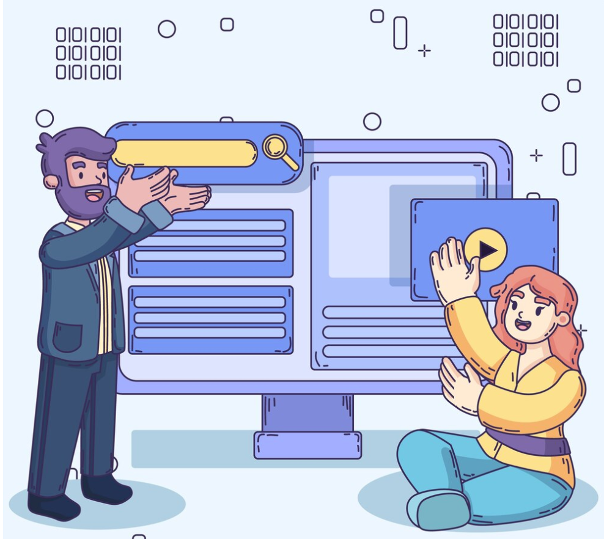

What is the purpose of a wireframe?
A wireframe is a visual blueprint used in the design process to outline the structure and layout of a webpage or app. Its purpose is to plan the placement of key elements like headers, menus, buttons, and content areas. Wireframes focus on functionality and user experience rather than aesthetics. They help designers, developers, and stakeholders align on the project's structure before detailed design begins. By simplifying complex ideas, wireframes ensure the design meets user needs effectively.
Read more

What is a branch in Git?
A branch in Git is a separate line of development within a repository. It allows developers to work on features, fixes, or experiments without affecting the main codebase. Branches help manage changes by keeping them isolated until they are ready to be merged. The default branch in Git is usually called "main" or "master." Using branches enables collaborative development and helps maintain a clean and organized project history.
Read more